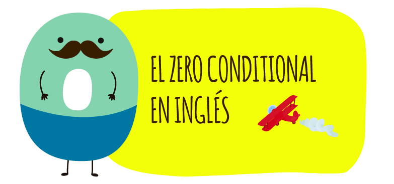

Inglés IV
El Zero Conditional (Condicional Cero) es una estructura gramatical en inglés que se utiliza para hablar de hechos generales, verdades universales o situaciones que siempre son verdaderas cuando ocurre una condición específica.
Estructura
If + presente simple + presente simple
Guía de Inglés
Ejemplos
Objetivo: Lee la pregunta y busca la opción correcta usando la estructura del Zero Conditional.
1. If you pay more than the required installment, ________ the principal faster.
A) you reduce
B) you travel
C) you cook
Correcto ✔️: A) you reduce 🎉
Ejercicios Prácticos
Videos Recomendados
Oraciones Zero Conditional

Ejemplo 2

Ejemplo 3